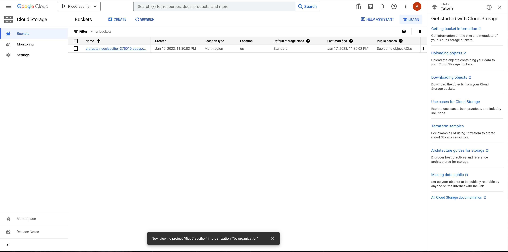
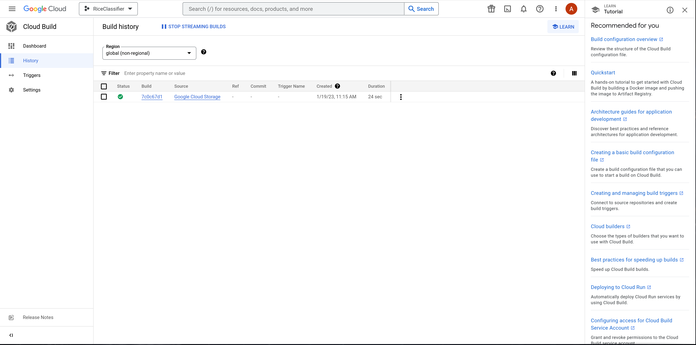
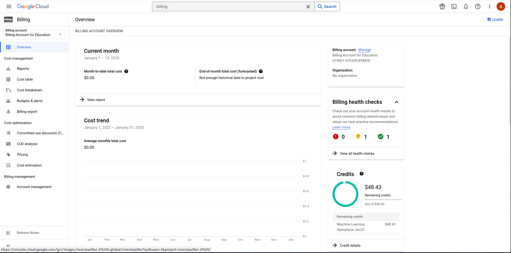
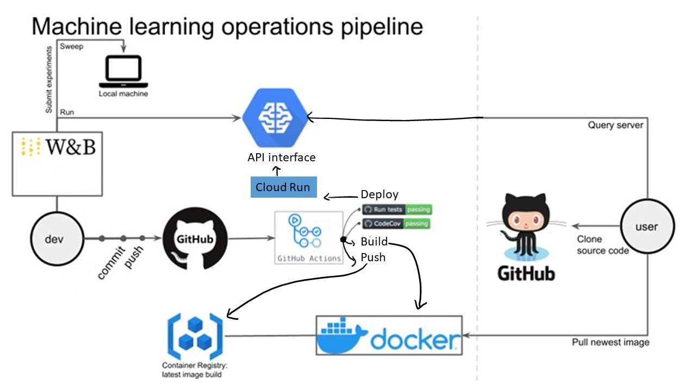

This is the report template for the exam. Please only remove the text formatted as with three dashes in front and behind like:
--- question 1 fill here ---
where you instead should add your answers. Any other changes may have unwanted consequences when your report is auto
generated in the end of the course. For questions where you are asked to include images, start by adding the image to
the figures subfolder (please only use .png, .jpg or .jpeg) and then add the following code in your answer:
markdown

In addition to this markdown file, we also provide the report.py script that provides two utility functions:
Running:
bash
python report.py html
will generate an .html page of your report. After deadline for answering this template, we will autoscrape
everything in this reports folder and then use this utility to generate an .html page that will be your serve
as your final handin.
Running
bash
python report.py check
will check your answers in this template against the constrains listed for each question e.g. is your answer too short, too long, have you included an image when asked to.
For both functions to work it is important that you do not rename anything. The script have two dependencies that can
be installed with pip install click markdown.
Enter the group number you signed up on
Answer:
3
Enter the study number for each member in the group
Example:
sXXXXXX, sXXXXXX, sXXXXXX
Answer:
s164397, s221813, s174261, s174250
What framework did you choose to work with and did it help you complete the project?
Answer length: 100-200 words.
Example: We used the third-party framework ... in our project. We used functionality ... and functionality ... from the package to do ... and ... in our project.
Answer:
Our project produced an image classifier able to classify rice varieties among Arborio, Basmati, Ipsala, Jasmine, and Karacadag. We used a deep learning model. From the third-party framework PyTorch Images we imported a pre-trained ResNet50 model, and a training script. From Kaggle.com we imported the Rice Image Dataset.
In the following section we are interested in learning more about you local development environment.
Explain how you managed dependencies in your project? Explain the process a new team member would have to go through to get an exact copy of your environment.
Answer length: 100-200 words
Example: We used ... for managing our dependencies. The list of dependencies was auto-generated using ... . To get a complete copy of our development enviroment, one would have to run the following commands
Answer:
We used (mini)conda, pipreqs, docker, and git to manage our dependencies. We created a conda environment to make sure that the dependencies of our project do not cross-contaminate with others. Requirements of both pip and conda were handled by package pipreqs. To get a complete copy of our development environment, one would have to build our docker file:
docker build -f Docker.dockerfile . -t trainer:latest.
This file contains requirements.txt and environment.yml (generated wrespectively with commands pipreqs and conda env export > environment.yml). Finally, version control was managed with Git. A new team member would be invited to join the github repository, clone it, and run the docker file.
We expect that you initialized your project using the cookiecutter template. Explain the overall structure of your code. Did you fill out every folder or only a subset?
Answer length: 100-200 words
Example: From the cookiecutter template we have filled out the ... , ... and ... folder. We have removed the ... folder because we did not use any ... in our project. We have added an ... folder that contains ... for running our experiments. Answer:
A cookiecutter template is a set of files and directories that are used as a starting point for creating new projects. The template typically includes a variety of different components, such as source code, documentation, and configuration files. Overall, our code is organized into several different directories and files, each with a specific purpose.
The project folder contains any configuration files necessary for the project, such as settings for a specific framework or environment. The data folder is used to store any data related to the project, such as training and validation data and make_dataset.py file.
The models folder is used to store our <imported model. The reports folder is used to store any reports generated by the project, such as performance metrics or analysis results. The src folder contains the source code for the project, including the training script under models/train_model.py
The test folder is used to store any test cases and test scripts used to test the project. The test folder includes subfolders for unit tests, integration tests, and acceptance tests.
From the original template we removed the LICENSE file, the notebooks, and references folders as not of interest to our project. We added the config folder.
Did you implement any rules for code quality and format? Additionally, explain with your own words why these concepts matters in larger projects.
Answer length: 50-100 words.
Answer:
Rules for code and quality format ensure consistency, maintainability, and readability in large projects. This improves collaboration and reduces errors, ultimately saving time and resources. Our code is formatted to meet Pep8 standards via black editor. Import statements are taken care of with isort. We added docstrings to document some of our files.
In the following section we are interested in how version control was used in your project during development to corporate and increase the quality of your code.
How many tests did you implement?
Answer:
2
What is the total code coverage (in percentage) of your code? If you code had an code coverage of 100% (or close to), would you still trust it to be error free? Explain you reasoning.
Answer length: 100-200 words.
Example: The total code coverage of code is X%, which includes all our source code. We are far from 100% coverage of our code and even if we were then...*
Answer:
No, having a code coverage of 100% does not guarantee that the code is error-free. Code coverage measures the percentage of code that is executed during testing, but it does not take into account the quality of the tests or the correctness of the code logic. Even if all lines of code are executed, there may still be bugs or errors present in the code. Additionally, code coverage does not account for edge cases or unexpected inputs that may cause the code to fail. Therefore, it is important to also conduct thorough testing and code review to ensure the overall quality and reliability of the code. The total code coverage of code is 100%, which includes all our source code.
Did you workflow include using branches and pull requests? If yes, explain how. If not, explain how branches and pull request can help improve version control.
Answer length: 100-200 words.
Example: We made use of both branches and PRs in our project. In our group, each member had an branch that they worked on in addition to the main branch. To merge code we ...
Answer:
We made use of both branches and PRs in our project. In our group, each member had an branch that they worked on in addition to the main branch. Each branch worked on different taks: on one we created a dedicated environment for the project to keep track of packages, filled out the requirements.txt file, checked code formatting, setup version control, wrote one configuration file for our experiments, created a data storage in GCP Bucket for our data and linked this with our data version control setup. On another one we used Weights & Biases to log training progress and other important metrics/artifacts in out code; another one was used to write unit tests related to the data part of our code, to model construction and or model training, calculate the coverage and finally another to create a FastAPI application that can do inference using our model, and create a trigger workflow for automatically building our docker images.
Did you use DVC for managing data in your project? If yes, then how did it improve your project to have version control of your data. If no, explain a case where it would be beneficial to have version control of your data.
Answer length: 100-200 words.
Example: We did make use of DVC in the following way: ... . In the end it helped us in ... for controlling ... part of our pipeline
Answer:
Yes, initially Google Drive, then GCP bucket, and finally Git Large File System. Although we set up data version control, our dataset was never modified. In general, DVC is beneficial in managing data in a project when multiple team members are working on the same data set. With data version control, team members can collaborate on the dataset and make changes without interfering with each other's work. It also allows for easy tracking of changes and rollbacks if necessary. Additionally, data version control makes it easy to reproduce results and maintain a clear history of changes to the data set, which is essential for transparency and reproducibility in research projects. Overall, data version control ensures efficient collaboration and accountability in data management.
Discuss you continues integration setup. What kind of CI are you running (unittesting, linting, etc.)? Do you test multiple operating systems, python version etc. Do you make use of caching? Feel free to insert a link to one of your github actions workflow.
Answer length: 200-300 words.
Example: We have organized our CI into 3 separate files: one for doing ..., one for running ... testing and one for running ... . In particular for our ..., we used ... .An example of a triggered workflow can be seen here:
Answer:
We have organized our CI into 3 separate files: one for doing ..., one for running ... testing and one for running
... . In particular for our ..., we used ... .An example of a triggered workflow can be seen here:
In the following section we are interested in learning more about the experimental setup for running your code and especially the reproducibility of your experiments.
How did you configure experiments? Did you make use of config files? Explain with coding examples of how you would run a experiment.
Answer length: 50-100 words.
Example: We used a simple argparser, that worked in the following way:
python my_script.py --lr 1e-3 --batch_size 25
In general, a configuration file contains desired experiment settings, such as hyperparameters, data paths, and run options. A developer uses a library or script to read the file and set the corresponding values in the code before running the experiment.
Answer:
We used a simple argparser, that worked in the following way: python train.py --lr 1e-4 --batch_size 50 --seed 1337. Hyperparameters are stored under config/config.yaml
Reproducibility of experiments are important. Related to the last question, how did you secure that no information is lost when running experiments and that your experiments are reproducible?
Answer length: 100-200 words.
Example: We made use of config files. Whenever an experiment is run the following happens: ... . To reproduce an experiment one would have to do ...
Answer:
TODO
Upload 1 to 3 screenshots that show the experiments that you have done in W&B (or another experiment tracking service of your choice). This may include loss graphs, logged images, hyperparameter sweeps etc. You can take inspiration from this figure. Explain what metrics you are tracking and why they are important.
Answer length: 200-300 words + 1 to 3 screenshots.
Example: As seen in the first image when have tracked ... and ... which both inform us about ... in our experiments. As seen in the second image we are also tracking ... and ...
Answer:
We utilized loss and accuracy as metrics in W&B to monitor the performance of our machine learning models. Loss is a measure of how well a model is able to predict the target variable, and it is calculated by comparing the predicted values to the actual values. In other words, it represents the error of the model, and the goal is to minimize it. In contrast, accuracy is a measure of how well the model is able to correctly classify the target variable. It is calculated by comparing the number of correctly classified instances to the total number of instances.
We used W&B to track and visualize the evolution of these metrics during the training process, which helped us to identify when the model was overfitting or underfitting, and to make adjustments accordingly. This allowed us to optimize the model's performance and fine-tune the parameters to achieve the best results.
Docker is an important tool for creating containerized applications. Explain how you used docker in your experiments? Include how you would run your docker images and include a link to one of your docker files.
Answer length: 100-200 words.
Example: For our project we developed several images: one for training, inference and deployment. For example to run the training docker image:
docker run trainer:latest lr=1e-3 batch_size=64. Link to docker file:Answer:
In the training phase, Docker is used to create a containerized environment for the training dataset and the training script. This ensures that the training process is consistent and reproducible across different environments. In the inference phase, a containerized environment is created for the trained model and the inference script, which can be deployed to different environments. In the deployment phase, the containerized environment is deployed to a production environment, such as a cloud service or a local server, to ensure that the model is running in a consistent environment. This allows for easy scaling and management of the deployed model.
When running into bugs while trying to run your experiments, how did you perform debugging? Additionally, did you try to profile your code or do you think it is already perfect?
Answer length: 100-200 words.
Example: Debugging method was dependent on group member. Some just used ... and others used ... . We did a single profiling run of our main code at some point that showed ...
Answer:
When running into bugs while trying to run experiments, we first tied to identify the source of the problem by reviewing the code and any error messages that are displayed. Next, we used the TIMM documentation to understand why the trainig was failing. We also made sure to test small sections of the code at a time to ensure that the problem was not caused by an interaction between multiple sections. Additionally, we consulted online resources to see if similar bugs have been reported and if there were any known solutions. We did not perform any profiling of our main code.
In the following section we would like to know more about your experience when developing in the cloud.
List all the GCP services that you made use of in your project and shortly explain what each service does?
Answer length: 50-200 words.
Example: We used the following two services: Engine and Bucket. Engine is used for... and Bucket is used for...
Answer:
Google Cloud Platform's Engine and Bucket are two separate services that work together to provide a comprehensive solution for cloud computing and storage. Engine is a powerful and flexible platform that allows users to create and run virtual machines, containers, and other applications on the cloud. It provides a wide range of features and tools for managing and scaling resources, including automatic load balancing, automatic backups, and automatic scaling. This makes it easy for users to create and manage their applications and services on the cloud, without having to worry about the underlying infrastructure.
Bucket, on the other hand, is a cloud-based storage service that allows users to store and manage data in the cloud. It provides a simple and cost-effective way to store and access data, including large files, images, videos, and other types of data. Bucket also provides a range of security and access controls, so users can control who has access to their data and how it is used. Together, Engine and Bucket provide a powerful and reliable solution for cloud computing and storage, making it easy for users to create and manage their applications and services on the cloud.
The backbone of GCP is the Compute engine. Explained how you made use of this service and what type of VMs you used?
Answer length: 50-100 words.
Example: We used the compute engine to run our ... . We used instances with the following hardware: ... and we started the using a custom container: ...
Answer:
TODO
Insert 1-2 images of your GCP bucket, such that we can see what data you have stored in it. You can take inspiration from this figure.
Answer:

Upload one image of your GCP container registry, such that we can see the different images that you have stored. You can take inspiration from this figure.
Answer:
Upload one image of your GCP cloud build history, so we can see the history of the images that have been build in your project. You can take inspiration from this figure.
Answer:

Did you manage to deploy your model, either in locally or cloud? If not, describe why. If yes, describe how and preferably how you invoke your deployed service?
Answer length: 100-200 words.
Example: For deployment we wrapped our model into application using ... . We first tried locally serving the model, which worked. Afterwards we deployed it in the cloud, using ... . To invoke the service an user would call
curl -X POST -F "file=@file.json"<weburl>Answer:
We deployed our model in the cloud. For deployment we wrapped our model into application using GCP service Cloud Run. It can be accessed via https://riceclassifier-375010-zhexeh6bxa-uc.a.run.app/
Did you manage to implement monitoring of your deployed model? If yes, explain how it works. If not, explain how monitoring would help the longevity of your application.
Answer length: 100-200 words.
Example: We did not manage to implement monitoring. We would like to have monitoring implemented such that over time we could measure ... and ... that would inform us about this ... behaviour of our application.
Answer:
TODO
How many credits did you end up using during the project and what service was most expensive?
Answer length: 25-100 words.
Example: Group member 1 used ..., Group member 2 used ..., in total ... credits was spend during development. The service costing the most was ... due to ...
Answer:
In total, 2 credits were spend during development.

In the following section we would like you to think about the general structure of your project.
Include a figure that describes the overall architecture of your system and what services that you make use of. You can take inspiration from this figure. Additionally in your own words, explain the overall steps in figure.
Answer length: 200-400 words
Example:
The starting point of the diagram is our local setup, where we integrated ... and ... and ... into our code. Whenever we commit code and puch to github, it auto triggers ... and ... . From there the diagram shows ...
Answer:

Whenever we commit code and push code to GitHub, GitHub Actions runs the code and performs multiple tests, using tools such as CodeCov to measure code coverage. If all tests pass, the code can then be integrated into docker imagaes (we use only one). All the images are then pushed to the container registry.The Docker Container Registry is used for storing and managing Docker images. It allows users to easily access, download and use pre-built images for their applications, as well as upload and share their own images with others. GitHub Actions also pushes the deployment version to Cloud Run. Cloud Run allows developers to deploy containerized applications on Google Cloud Platform. Here we designed a stateless HTTP-based service in a highly scalable and cost-effective manner. User upload an image on the API interface and the query returns label and accuracy of prediction. User can clone all source code from GitHub. Finally, Weights and Biases (W&B) tool was used for tracking, analyzing, and visualizing our experiment. Experiments were run on local machine and the best set of parameters chosen for deployment.
Discuss the overall struggles of the project. Where did you spend most time and what did you do to overcome these challenges?
Answer length: 200-400 words.
Example: The biggest challenges in the project was using ... tool to do ... . The reason for this was ...
Answer:
One of the main struggles our team faced during the project was managing multiple branches on our git repository. As we progressed through the project, we encountered multiple challenges that required us to create new branches to fix bugs or implement new features. However, this led to confusion and difficulty in merging the branches back into the main branch. To overcome this challenge, we implemented a strict branching strategy where we designated specific team members as branch managers to ensure that merging was done in an organized and timely manner.
Another struggle we faced was installing the necessary tools for the project. The project required us to use several new technologies that we were not familiar with, such as GCP and Weights & Biases. This led to a significant amount of time spent on researching and learning how to use these tools effectively.
Integrating our model into the cookie cutter structure was another challenge we faced. The cookie cutter structure provided a clear and organized file structure for the project, but it was difficult for us to understand how to properly integrate our model into it. This led to a lot of time spent on understanding the structure and determining the best way to integrate our model. To overcome this challenge, we discussed regularly to brainstorm solutions.
State the individual contributions of each team member. This is required information from DTU, because we need to make sure all members contributed actively to the project
Answer length: 50-200 words.
Example: Student sXXXXXX was in charge of developing of setting up the initial cookie cutter project and developing of the docker containers for training our applications. Student sXXXXXX was in charge of training our models in the cloud and deploying them afterwards. All members contributed to code by...
Answer:
Student s164397 used Weights & Biases to log training progress and other important metrics/artifacts in our code
Student s221813 created a dedicated environment for the project to keep track of packages, filled out the requirements.txt file, checked code formatting, setup version control, wrote one configuration file for our experiments, created a data storage in GCP Bucket for our data and linked this with our data version control setup.
Student s17426 created a git repository, made sure that all team members have write access to the github repository, wrote unit tests related to the data part of our code, to model construction and or model training, calculated the coverage.
Student s174250 created a FastAPI application that can do inference using our model, created a trigger workflow for automatically building our docker images.
9a348b05162ab0f56881a8e7e5c15eef1eaaeb2c
{kind=link}
{kind=link}
{kind=link}
{kind=link}
{kind=link}
{kind=link}
{kind=link}